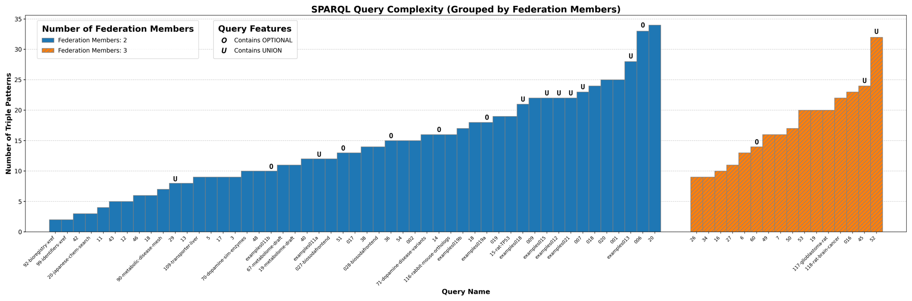
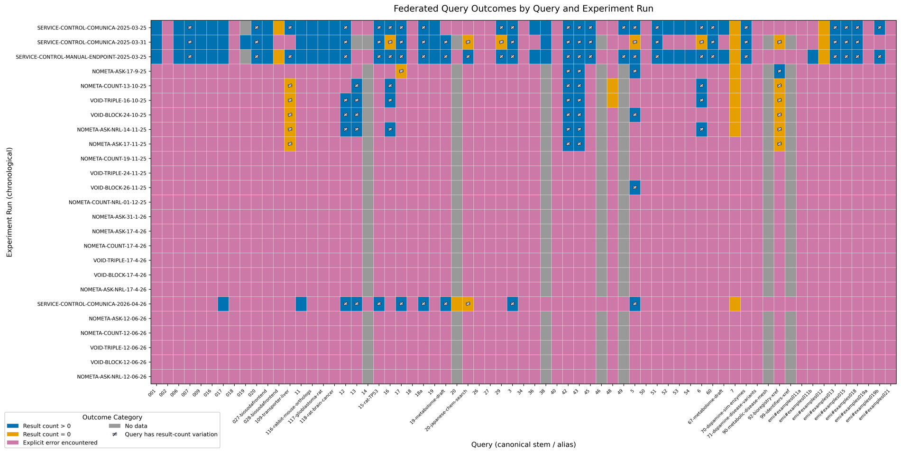
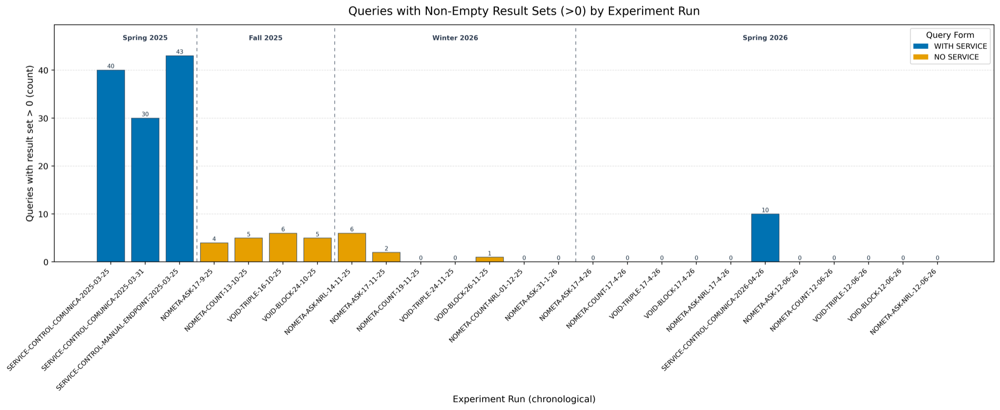

Endpoint migration
14/67 queries touched the former DBGI/EMI endpoint, which moved to METRIN-KG.
ISWC 2026 · In-Use Paper Presentation
Elias Crum et al. · International Semantic Web Conference 2026 · Bari, Italy ·
International Semantic Web Conference 2026 · Bari, Italy
A longitudinal case study over large biological SPARQL endpoints
Elias Crum1 · Bryan-Elliott Tam1 · Jonni Hanski1 · Ana-Claudia Sima2 · Tarcisio Mendes de Farias2 · Jerven Bolleman3 · Ruben Taelman1
1 IDLab, Ghent University – imec, Belgium
2 SIB Swiss Institute of Bioinformatics, Lausanne, Switzerland
3 Swiss-Prot group, SIB Swiss Institute of Bioinformatics, Geneva, Switzerland
01 · The promise
Running example · liver transporters
Key messageFederation lets you query data where it lives. No central copy needed.
1 Running example, paraphrased from query 109 of our 67: “human transporter proteins expressed in the liver”, combining UniProt (UniProt Consortium, NAR 2023) and Bgee (Bastian et al., NAR 2021). 2 W3C, SPARQL 1.1 Federated Query, Recommendation (2013).
02 · The gap
Key messageBenchmarks test controlled conditions; we tested federation in everyday use.
1 Benchmarks: FedBench (Schmidt et al., ISWC 2011) · LargeRDFBench (Saleem et al., J. Web Semant. 2018) · FedShop (Dang et al., ISWC 2023). 1 Controlled evaluations: federation systems (Saleem et al., Semantic Web J. 2016) · Wikidata querying (Hernández et al., ISWC 2016).
03 · Two ways to federate
Running example · liver transporters
Key messageAlgorithmic federation is more convenient, but far more request-intensive.
1 W3C, SPARQL 1.1 Federated Query, Recommendation (2013). 2 Run with Comunica (Taelman et al., ISWC 2018) using ASK-, COUNT- and VoID-based source selection; see S8.
04 · The queries
Running example · liver transporters
Key messageEvery query answers a real biological question, written by a domain expert.
1 Bolleman et al., “A large collection of bioinformatics question–query pairs over federated knowledge graphs”, GigaScience 2025. Source: Crum et al., ISWC 2026 (Sec. 4.2); per-query complexity in S2.
05 · What we did
Key messageRather than a benchmark: the same real-world queries, repeated over one year.
“Answered” = a non-empty result (S1). Queries & their complexity: S2. All data: ecrum19.github.io/fed-survey-results.
06 · Finding 1
Running example · liver transporters
Key messageAlgorithmic federation was far less reliable than manual federation.
All runs, Spring 2025 to Spring 2026: SERVICE 47.3% non-empty / 46.2% explicit errors · no-service 3.0% / 95.1%; rounded to whole squares.
In Spring 2026, when both ran: 10 vs. 0 of 67 queries returned a non-empty result set.
Source: Crum et al., ISWC 2026.
07 · Why it fails
Running example · liver transporters
Key messageAlgorithmic federation can exceed what shared public endpoints are able to serve.
924,299 HTTP requests were issued by one algorithmic run of query 6 before it failed (S7). Source: Crum et al., ISWC 2026; error groups in S6.
08 · Finding 2
Running example · liver transporters
Key messageReliability declined over the year, for manual and algorithmic federation alike.
Small dots = individual runs (25); large dots = period average. Manual runs took place in Spring 2025 and Spring 2026; algorithmic runs from Fall 2025 on. Source: Crum et al., ISWC 2026; per-run figure in S5.
09 · Changes over time
Running example · liver transporters
Key messageEndpoints evolve as a matter of course; federated queries must be robust to it.
68.7% of queries showed result-count variation across repeated runs. Source: Crum et al., ISWC 2026; details on each change in S9.
10 · Two sides of one problem
Key messageBoth needs are legitimate; what is missing is coordination between them.
Example: UniProt tightened its limits as traffic grew, and clients then saw 403 rejections (S9).
11 · Recommendations
Key messageDependable federation needs users, engine builders and maintainers working together.
1 Existing W3C vocabularies are a starting point: VoID (Alexander et al., W3C Interest Group Note 2011) and SPARQL 1.1 Service Description (Williams, W3C Recommendation 2013).
12 · Future work
Key messageIf endpoints publish their limits, engines and users can stay within them.
1 VoRD, Vocabulary of Restrictive Datasets (v0.2): github.com/ecrum19/vord · ecrum19.github.io/vord. Extends SPARQL 1.1 Service Description; validated with SHACL and ShEx. Card values: VoRD’s Wikidata example, derived from Wikimedia’s public rate-limit documentation (May 2026).
13 · Conclusions
Explore every query and run:
ecrum19.github.io/fed-survey-results ↗
Paper:
Crum et al., ISWC 2026 ↗
Key messageReal-world federation needs real-world evaluation and coordinated community effort.
Supported by FWO · SolidLab Vlaanderen · Swiss National Science Foundation · EU Horizon Europe (MICROBES-4-CLIMATE) · Swiss Government SERI · NIH.
Supplementary slides
S1 · Measurement
Parseable SPARQL Results JSON with result count > 0.
Parseable output, but zero bindings returned.
No usable output or an exception/error path.
Result-set size agreement is used as a proxy for consistency; the study does not claim semantic binding equality. Direct endpoint execution and the Comunica control were close (65.2% vs. 60.6% non-empty).
S2 · The workload

Average: 14.9 triple patterns (2–34) · 2.24 federation members · few OPTIONAL/UNION. Crum et al., ISWC 2026 (Sec. 4.2).
S3 · From SERVICE to no-service
original/109_uniprot_transporter_in_liver.rq# Datasources: https://sparql.uniprot.org/sparql/
PREFIX genex: <http://purl.org/genex#>
PREFIX lscr: <http://purl.org/lscr#>
PREFIX obo: <http://purl.obolibrary.org/obo/>
PREFIX orth: <http://purl.org/net/orth#>
PREFIX rh: <http://rdf.rhea-db.org/>
PREFIX taxon: <http://purl.uniprot.org/taxonomy/>
PREFIX uberon: <http://purl.obolibrary.org/obo/uo#>
PREFIX up: <http://purl.uniprot.org/core/>
SELECT
?rhea
?protein
?anat
WHERE
{
GRAPH <https://sparql.rhea-db.org/rhea> {
?rhea rh:isTransport true .
}
?protein up:annotation ?ann .
?protein up:organism taxon:9606 .
?ann up:catalyticActivity ?ca .
?ca up:catalyzedReaction ?rhea .
BIND(uberon:0002107 AS ?anat)
SERVICE <https://www.bgee.org/sparql> {
?seq genex:isExpressedIn ?anat .
?seq lscr:xrefUniprot ?protein .
?seq orth:organism ?organism .
?organism obo:RO_0002162 taxon:9606 .
}}no-service/109_uniprot_transporter_in_liver_ns.rq# Datasources: https://sparql.uniprot.org/sparql/ https://www.bgee.org/sparql
PREFIX genex: <http://purl.org/genex#>
PREFIX lscr: <http://purl.org/lscr#>
PREFIX obo: <http://purl.obolibrary.org/obo/>
PREFIX orth: <http://purl.org/net/orth#>
PREFIX rh: <http://rdf.rhea-db.org/>
PREFIX taxon: <http://purl.uniprot.org/taxonomy/>
PREFIX uberon: <http://purl.obolibrary.org/obo/uo#>
PREFIX up: <http://purl.uniprot.org/core/>
SELECT
?rhea
?protein
?anat
WHERE
{
GRAPH <https://sparql.rhea-db.org/rhea> {
?rhea rh:isTransport true .
}
?protein up:annotation ?ann .
?protein up:organism taxon:9606 .
?ann up:catalyticActivity ?ca .
?ca up:catalyzedReaction ?rhea .
BIND(uberon:0002107 AS ?anat)
{
?seq genex:isExpressedIn ?anat .
?seq lscr:xrefUniprot ?protein .
?seq orth:organism ?organism .
?organism obo:RO_0002162 taxon:9606 .
}}One change: the SERVICE <https://www.bgee.org/sparql> wrapper becomes a plain group and Bgee joins the data sources, so the engine must place every pattern itself. Files verbatim from fed-survey-results/queries ↗.
S4 · All outcomes

Rows = experiment runs, columns = queries (dashboard order). Crum et al., ISWC 2026 (Fig. 3); chronological version in the paper.
S5 · Answers per run

Queries with result set > 0, per experiment run (dashboard order). Crum et al., ISWC 2026 (Fig. 2); chronological version in the paper.
S6 · Errors
S7 · Request explosions
No-service median runtime 4.47 s; 90th percentile 247.92 s. Crum et al., ISWC 2026.
S8 · Algorithmic strategies
| Configuration family | Planning signal | Non-empty results | Rate |
|---|---|---|---|
NOMETA-ASK | Live ASK probing | 12 / 360 | 3.33% |
NOMETA-COUNT | Live COUNT probing | 5 / 240 | 2.08% |
VOID-TRIPLE | VoID, triple-pattern granularity | 6 / 180 | 3.33% |
VOID-BLOCK | VoID, larger query blocks | 6 / 174 | 3.45% |
All configurations ran in the same Comunica 4.3.0 client (Taelman et al., ISWC 2018).
S9 · Endpoint changes
14/67 queries touched the former DBGI/EMI endpoint, which moved to METRIN-KG.
A temporary EMI federation server was deprecated in September 2025 and removed in November.
UniProt changed backends and updated its usage limits as traffic increased; clients received HTTP 403 responses.
S10 · Boundaries
The workload and endpoints come from biological Linked Data; other domains may behave differently.
67 queries and a limited endpoint set provide evidence of practice, not a universal benchmark.
We can observe when outcomes changed, but not always the precise administrative or infrastructural cause.
S11 · The running example
# sent to sparql.uniprot.org (PREFIXes omitted)
SELECT ?rhea ?protein ?anat
WHERE {
GRAPH <https://sparql.rhea-db.org/rhea> {
?rhea rh:isTransport true .
}
?protein up:annotation ?ann .
?protein up:organism taxon:9606 .
?ann up:catalyticActivity ?ca .
?ca up:catalyzedReaction ?rhea .
BIND(uberon:0002107 AS ?anat)
SERVICE <https://www.bgee.org/sparql> {
?seq genex:isExpressedIn ?anat .
?seq lscr:xrefUniprot ?protein .
?seq orth:organism ?organism .
?organism obo:RO_0002162 taxon:9606 .
}
}answered empty error
Errors were HTTP 403 Forbidden from UniProt and Bgee within 2–12 requests. One Fall 2025 run was aborted after 609 requests (69 s).
UniProt SPARQL example 109_uniprot_transporter_in_liver (federates UniProt + Bgee). Per-run logs: github.com/ecrum19/fed-survey-results ↗. The paper’s Figure 1 shows query 7 (SwissLipids), which returned no non-empty result in any run.
S12 · References